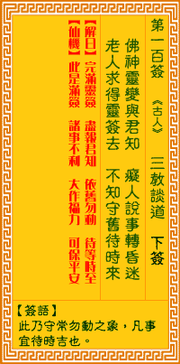

观音灵签第一百签 【三教谈道】 |
 | |||
欲就东兮欲就西 逢人说事转痴迷 登山不见神仙面 莫若守常且待时 |
||||
| 【吉凶】 | 下下签 | 【宫位】 | 亥宫 | |
| 【签语】 | 此卦守常勿动之象，凡事宜待时吉也。 | |||
| 【解曰】 | 完满灵签 尽报君知 依旧勿动 待等时至 | |||
| 【仙机】 | 此签是满签，诸事不利，大作福力，可保平安。 | |||
| 【详解】 | 一下想往东，一下又想要向西，遇人说话反复无常;就似爬上了高山，终究找不到神仙的踪影，倒不如回去吧，别再提这件事了。 此签及百，祈之未然，营谋用事，费力流连。此签无常无定之象，凡事多虚少实。 本签者。无常无定之象。外虚少实者也。第一百首。是盈数。为全数之末。亦即言。它是前数之终。后数之始。易言之。黑暗将去。黎明到来之征。表面上是没落 之相。其实是通亨衢之意。唯集福之本。宜小心集之。及百祈之未然营谋用事费力流连。 此签有”不切实际”之意。奉劝当事人，凡事脚踏实地。有些事是可遇而不可求，切勿妄想执着。对于昙花一现的物事，如果就此眷恋不忘，无异于守株待兔，只 不过是浪费时间、枉费心力罢了。与其执着在不确定的事情上面，还不如跳脱迷思，自力更生。凡事务实、一步一脚印，须知一分耕耘，才有一分收获。有梦想就 必须靠自己努力打拚来实现，不然就只是流于空想罢了。 | |||
| 【典故】 | 三教是指：佛（释迦牟尼）儒（孔夫子）道（张道陵）三教派。北周武帝（公元五六一年）时，佛儒道人士纷争和互相排斥，佛教尤受其 害。皇帝于是召集佛儒道三教派的代表人物，以辩论所奉的‘道’高低长短，并排名定位，经过三次集会争辩，都没有结论，从此三教派在中国民间自由发展，后佛教演义为中国 人民信仰的主流。也有三教同源之说 | |||